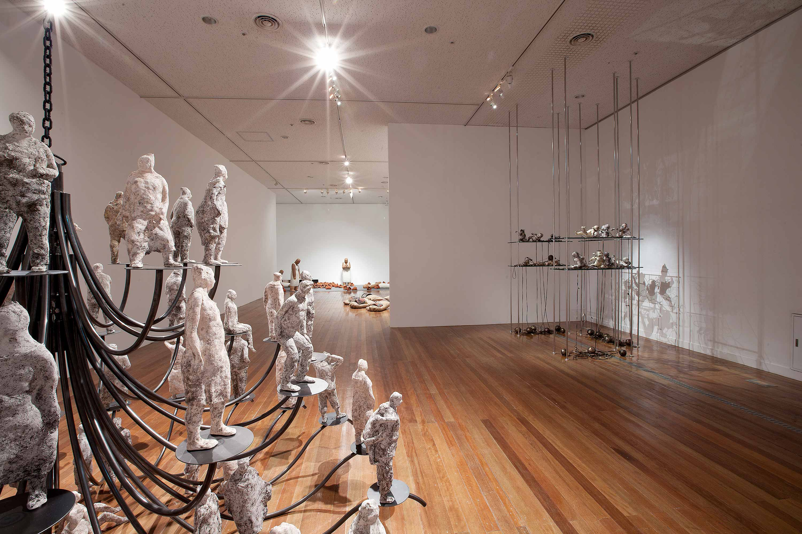

2019 Korean International Ceramic Biennale
2019년 제10회 경기세계도자비엔날레가
도자예술의 발전적 미래를 위한 새로운 장을 엽니다

도자비엔날레 무대를 통해 다양한 네트워크가 연결되어 도자예술의 미래를 이끄는 예술현장이 될 것이며, 이러한 '연결'을 통한 '융합'은 비엔날레 이후에도 점진적으로 확장되어 지속적인 교류의 패러다임이 만들어질 것입니다.
이번 경기세계도자비엔날레에서는 지금 이 시대, 세계가 주목해야 하는 대표작가 302인과 함께 이천세계도자센터 현장과 온라인플랫폼에서 다채로운 프로그램으로 여러분을 맞이합니다.
한국은 물론 세계 각국의 도자 예술가들이 한 자리에 모여 작가와 전문가, 대중이 서로 소통하고 생동하는 장을 구현하고자 합니다. 전시관 안에서 국내외 작가들을 직접 만나 작품을 관람하고 오감으로 도자를 이해하며 예측 불허한 다채로운 도자예술의 변주가 만들어내는 움직이는 전시 현장을 느껴볼 수 있습니다.
또한, 이번 비엔날에는 물리적인 공간인 전시관 내외부에서 뿐만 아니라 온라인을 통해 전시와 토크, 퍼포먼스 등 행사가 진행될 예정이며 302인의 작품세계를 한 눈에 조망할 수 있는 아카이브로서 디지털 네트워크를 통해 전 세계 도자예술을 하나로 연결하는 장을 소개합니다.
- 일시 : 2019.9.27.(금)~11.24.(일), 59일간
- 장소 : 현장전시(이천세계도자센터) / 온라인전시(www.kicb.co.kr)
- 주최 : 경기도
- 주관 : 한국도자재단, KICB 국제위원회
Main Schedule
Exhibition
-
International Competition
- On-site Exhibition
Participants : 42
Sep. 27.(Fri) ~ Nov. 24.(Sun), 2019
Gallery 1, 2, 3, 4, Icheon World Ceramic Center- Online Exhibition
Participants : 302
Sep. 27.(Fri), 2019 ~
KICB Website(www.kicb.co.kr) -
Invitational Exhibition
Torbjøn Kvasbø: Cluster of VasesParticipants : Torbjørn Kvasbø
Sep. 27.(Fri) ~ Nov. 24.(Sun), 2019
Special Hall, Icheon World Ceramic Center
On-site Events
-
‘Live-style Events’ Performance, Demo and Talk
Participants : -
Sep. 27.(Fri) ~ Oct. 13.(Sun), 2019
Icheon World Ceramic Center & Artvillage -
Seminar
Participants : Open Internationally
Sep. 27.(Fri), 2019 ~
KICB Website(www.kicb.co.kr)
Global Exchange & Collaboration - Community Project
-
Residency Programs with KICB
Participants : About 10 artists
Sep. 25.(Wed) ~ Oct. 14.(Mon), 2019
Guldagergaard International Ceramic Research Center, DenmarkSep. 25.(Wed) ~ Oct. 23.(Wed), 2019
British Ceramic Biennial, UKSep. 25.(Wed) ~ Oct. 24.(Thu), 2019
Sundaymorning@EKWC, NetherlandSep. 25.(Wed) ~ Oct. 25.(Fri), 2019
New Taipei City Yingge Ceramics Museum, Taiwan1st: Jul. 15.(Mon) ~ Aug. 25.(Sun), 2019
2nd: Sep ~ Dec, 2019
Clayarch Gimhae Museum, South Korea-
Shigaraki Ceramic Cutural Park, Japan -
Speed Dating
Participants : about 35
Sep. 27.(Fri) ~ Oct. 13.(Sun), 2019
Icheon World Ceramic Center -
Networking Night
Participants : about 200
Sep. 28.(Sat), Oct. 5.(Sat), 12.(Sat). 2019
Traditional Kiln area, Icheon -
Tour
- VIP Tour
Participants : about 20(7 international committees)
Sep. 24.(Fri) ~ Sep. 27.(Sun), 2019
Galleries & Studios- Artist Tour
Participants : about 30(Open call)
Sep. 27.(Fri) ~ Oct. 13,(Sun), 2019
Icheon & Seoul
Global Exchange & Collaboration - Korea·Denmark Crafts Creative Exchange Program
-
Special Lectures
Participants : Mette Blum Marcher
Sep. 28.(Sat) ~ 30.(Mon), 2019
Manhwadang, Icheon -
Mentoring Camp
Participants : 2(team / Danish artist 2, Korean artist 2)
Sep. 29.(Sun) ~ Oct. 12.(Sat), 2019
Residency Studio, Icheon -
Kor-Den Craft Workshop
Participants : 1(team / Danish artist 1, Korean artist 1)
Sep. 29.(Sun) ~ Oct. 12.(Sat), 2019
CeraMIX Creativity Center, Icheon & Residency Hall, Cheongju -
Danish Culture Day
Participants : Public
Plaza
Online Platform
-
Online Exhibition
Participants : 302 Artists + Visitors
Sep. 27.(Fri), 2019 ~
KICB Website(www.kicb.co.kr) -
Online Talk & Performance
Participants : Public
Sep. 27.(Fri) ~ Nov. 24.(Sun), 2019
KICB Website(www.kicb.co.kr)